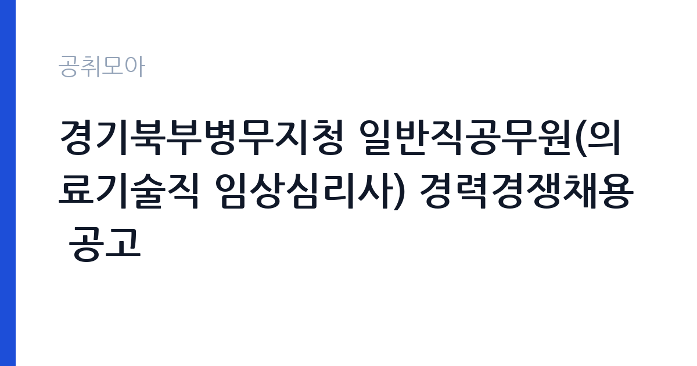

[국가기관] 경기북부병무지청 일반직공무원(의료기술직 임상심리사) 경력경쟁채용 공고
병무청 경인지방병무청 경기북부병무지청 · 경기 · 마감 2026-10-12 (D-12) · 출처 나라일터

한눈에 보는 모집 조건
| 기관 | 병무청 경인지방병무청 경기북부병무지청 |
|---|---|
| 공고명 | 경기북부병무지청 일반직공무원(의료기술직 임상심리사) 경력경쟁채용 공고 |
| 고용형태 | 정규직 |
| 근무지 | 경기 |
| 게시일 | 2026-09-30 |
| 마감일 | 2026-10-12 (D-12) |
지원자격, 이렇게 읽으세요
- 의료기술서기 1명
- 접수 ~2026-10-12 마감
- 세부 조건은 원문 공고문 확인
공고문의 응시자격은 짧지만 실제로는 세 가지를 본다. 첫째 임상심리사 자격증 소지 여부, 둘째 자격 등급과 관련 경력의 직무 연관성, 셋째 공무원임용 결격사유 해당 여부다. 병무청 경력경쟁채용은 자격증 구분표가 별도로 있어, 본인 자격이 해당 등급에 맞는지 원문에서 대조하는 것이 출발점이다. 셋 중 하나라도 애매하면 원문 공고문의 세부 조항을 먼저 확인하고 지원서를 쓰라.
이 공고의 포인트
이 공고의 관전 포인트는 '일반직 정규직'이라는 점이다. 병무청 임상심리사 모집 중에는 한시임기제로 나오는 회차도 있어, 이번처럼 일반직(의료기술서기)으로 나오는 공고는 정년까지 보장되는 자리라 가치가 높다. 두 번째로 근무지가 경기 의정부라 수도권 통근이 가능하다는 점이다. 임상심리사 자격증 소지자라면 지원 우선순위를 맨 위로 올려도 된다.
전형은 어떻게 진행되나
전형은 서류심사로 시작해 면접심사로 끝난다. 경력경쟁채용이라 서류에서는 임상심리사 자격증과 관련 경력의 적합성을 본다. 유사 회차(서울청) 기준 접수 기간은 일주일 남짓으로 짧은 편이니, 이번 공고도 마감일(2026-10-12) 직전에는 접속이 몰릴 수 있다. 최소 하루 전 제출을 권한다. 제출 후에는 접수번호·확인증 출력 여부를 반드시 확인하라.
이런 분께 추천해요
- 경기 의정부 통근이 가능한 분 — 경기북부병무지청 근무가 1순위 조건이다
- 임상심리사 자격증을 가진 분 — 자격증이 곧 응시권이다
- 마감(2026-10-12) 안에 서류를 낼 수 있는 분 — 접수 기간이 짧을 수 있으니 이번 주 안에 준비하자
지원 전 체크리스트
- 의료기술서기 응시자격(임상심리사 자격증 등 원문 자격요건)을 충족하는가 — 경력경쟁이라 자격증이 1차 필터다
- 경기북부병무지청(경기 의정부) 근무가 가능한가 — 통근·거주 조건 확인
- 마감일(2026-10-12) 전날까지 접수 가능한가 — 마감 당일 접수는 피하는 게 안전하다
- 결격사유(공무원임용령상)에 해당하지 않는가 — 병역·형사 기록 등 사전 점검
모집 일정과 제출 타이밍
이번 공고의 마감일은 2026-10-12다. 경력경쟁채용의 접수 기간은 통상 일주일 남짓으로 짧다. 권장 스케줄은 이렇다. 첫째 날 공고문과 자격요건 정독, 중간 기간 자기소개서 작성과 자격증 사본 준비, 마감 전날 접수 시스템 사전 입력이다. 마감 당일에 처음 접속하는 지원자가 가장 많이 탈락한다. 접수번호가 발급되고 확인증이 출력돼야 접수가 끝난 것이니 제출 후 확인증까지 꼭 챙기라.
직무 이해하기: 국가기관
병무청 임상심리사는 병역판정검사에서 심리검사와 판정을 맡는다. 입영 대상자의 정신건강 상태를 평가해 군 복무 적합 여부를 가리는 자리로, 심리검사 실시와 해석, 판정 보조가 핵심 업무다. 경기북부병무지청 소속 의료기술서기로 근무하며, 병무청 조직 안에서 의료기술직으로 분류된다. 유사 모집(서울지방병무청 사례)에서는 주 35시간 근무体制였으며, 정확한 근무조건은 원문에서 확인해야 한다. 임상심리사 자격증을 실제로 쓰는 몇 안 되는 국가기관 자리라, 전공자에게는 경력의 무게가 실리는 곳이다.
자기소개서 작성 팁
병무청 임상심리사 지원서의 핵심은 직무 직결성이다. 첫 문단에는 병역판정검사라는 특수한 현장을 택한 이유를 한 줄로 선언하라. 본론에는 심리검사 실시·해석 경험 두 가지를 검사 도구명과 함께 구체적으로 서술하라. 숫자가 들어간 서술이 좋다. 예를 들어 검사 시행 건수, 다룬 검사 도구 종류, 판정 회의 참여 경험을 적는 것이다. 마무리는 입사 후 병역판정 현장에서 기여할 부분을 적어라. 감점 요인은 세 가지다. 직무와 무관한 장황한 성장 과정, 자격증 번호 같은 증빙의 오기재, 그리고 마감일 착오다. 경력경쟁 전형은 실무 투입 속도를 보기 때문에 관련 검사 경험을 문장으로 명시하면 좋다.
면접 준비 포인트
병무청 임상심리사 면접은 실무 질문이 중심이다. 심리검사 도구별 실시 절차와 해석 포인트를 설명할 수 있게 연습하고, 병역판정검사라는 특수 현장에 대한 이해를 보여주는 것이 좋다. 면접관이 "민감한 판정을 내려본 경험이 있나"를 물으면 실제 사례를 들어 답하는 것이 좋다. 복장은 단정하게, 질문에는 결론부터 말하는 것이 기본이다. 병무청이 무슨 일을 하는 기관인지, 병역판정검사의 흐름이 어떻게 되는지는 알고 가는 것이 플러스가 된다.
급여·근무조건 읽는 법
급여는 공무원보수규정에 따라 정해진다. 의료기술서기는 8급 상당 일반직으로, 봉급표의 해당 호봉이 적용되며 수당이 별도로 붙는다. 유사 모집(서울지방병무청 임상심리사)의 급여란에도 공무원보수규정 준용으로 적혀 있어 별도 연봉 테이블은 없다. 정확한 초임과 수당 구성은 원문 공고문의 보수 조건에서 확인하시기 바란다. 국가기관 정규직이라 4대 보험과 퇴직금은 당연 적용되며, 정년이 보장되는 자리다.
자주 묻는 질문
- 의료기술서기가 몇 급인가요?
의료기술서기는 8급 상당의 일반직이다. 급여는 공무원보수규정에 따라 정해지며, 정확한 초임과 수당은 원문 공고문의 보수 조건에서 확인하시기 바란다. - 임상심리사 자격증이 꼭 필요한가요?
그렇다. 경력경쟁채용은 자격증이 응시 자격이자 1차 필터다. 원문의 자격요건에 적힌 임상심리사 자격 등급을 확인하고, 자격번호를 정확히 기재하시기 바란다. - 근무지는 어디인가요?
경기북부병무지청(경기 의정부)이다. 중앙병역판정검사소(대구)나 경인지방병무청(수원)과 혼동하지 말고, 지원 기관의 근무지를 확인하시기 바란다.
함께 보면 좋은 공고
[국가기관] 법제처 법령정비지원과 계약직 연구원 채용 공고 — 마감 2026-10-16[국가기관] 2026년 논산경찰서 청사방호 근로자(무기계약) 채용 공고 — 마감 2026-10-14[국가기관] 2026년 제3차 지식재산처 청년인턴 채용 공고 — 마감 2026-10-01출처: 나라일터 공개정보를 바탕으로 공취모아가 정리한 안내글입니다. 모집 조건·일정은 변경될 수 있으니 지원 전 반드시 원문 공고문을 확인하세요. 본 글은 정보 제공용이며 합격을 보장하지 않습니다.